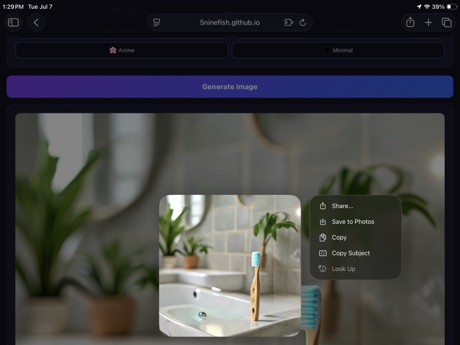
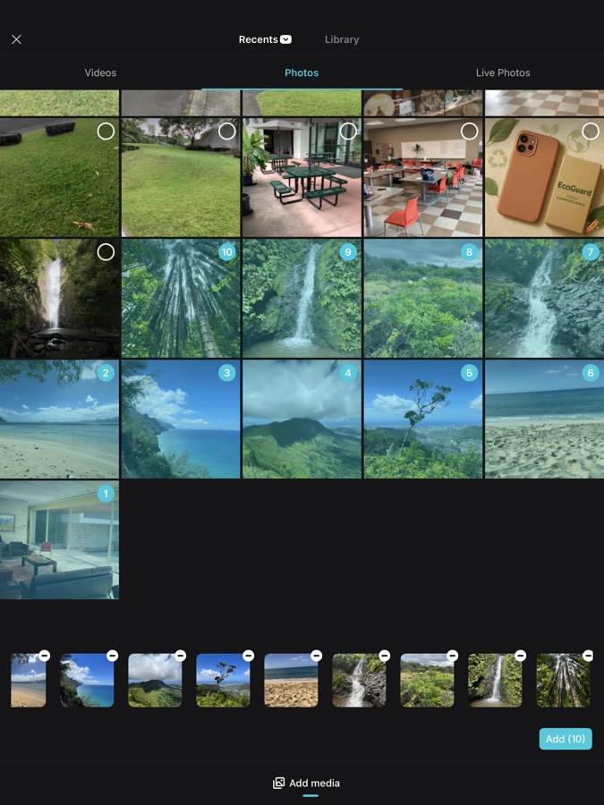
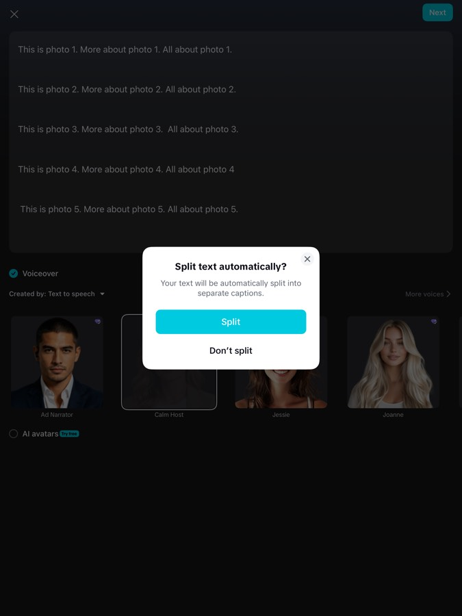
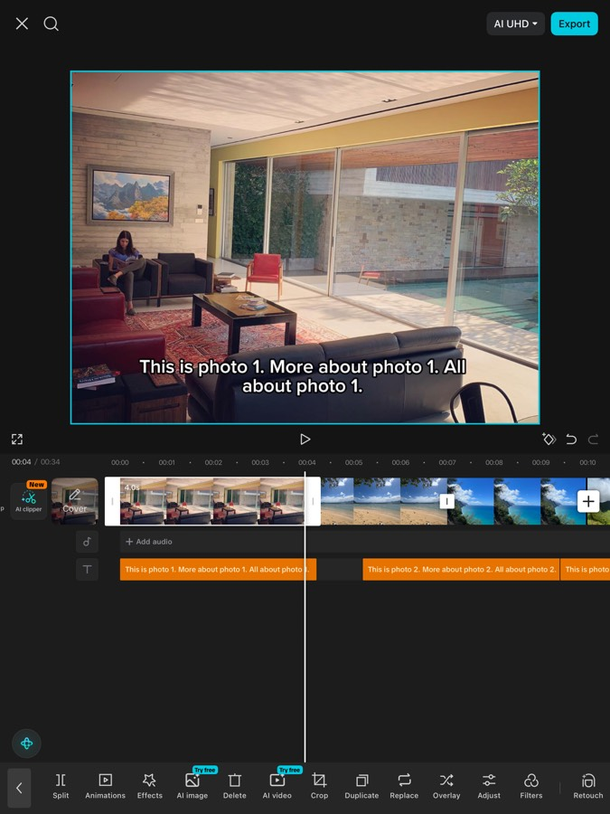
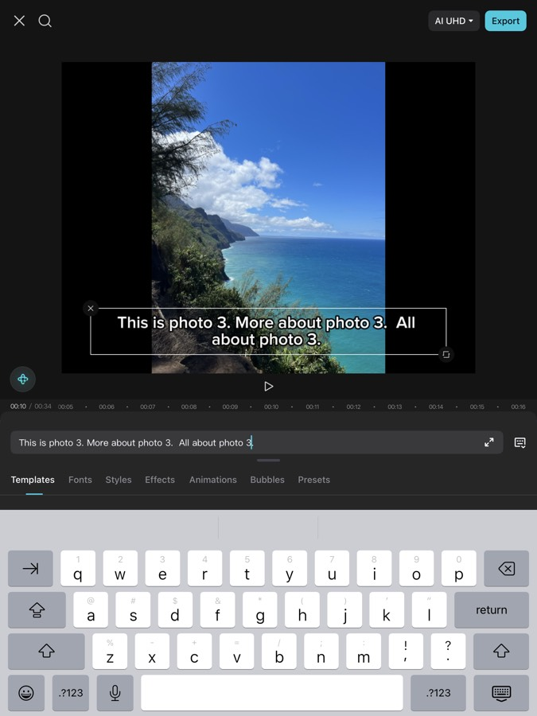
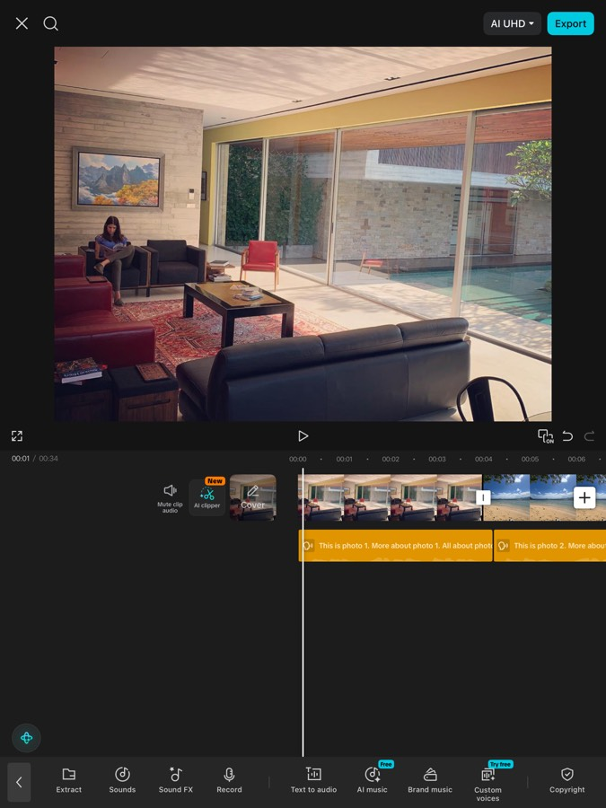
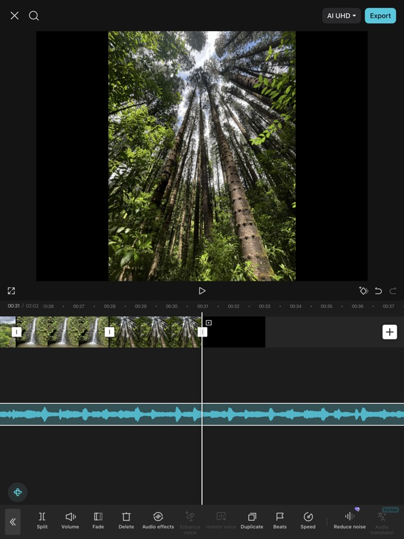
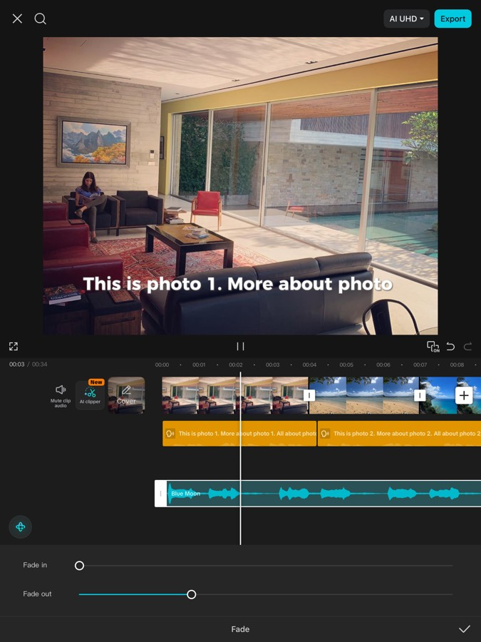
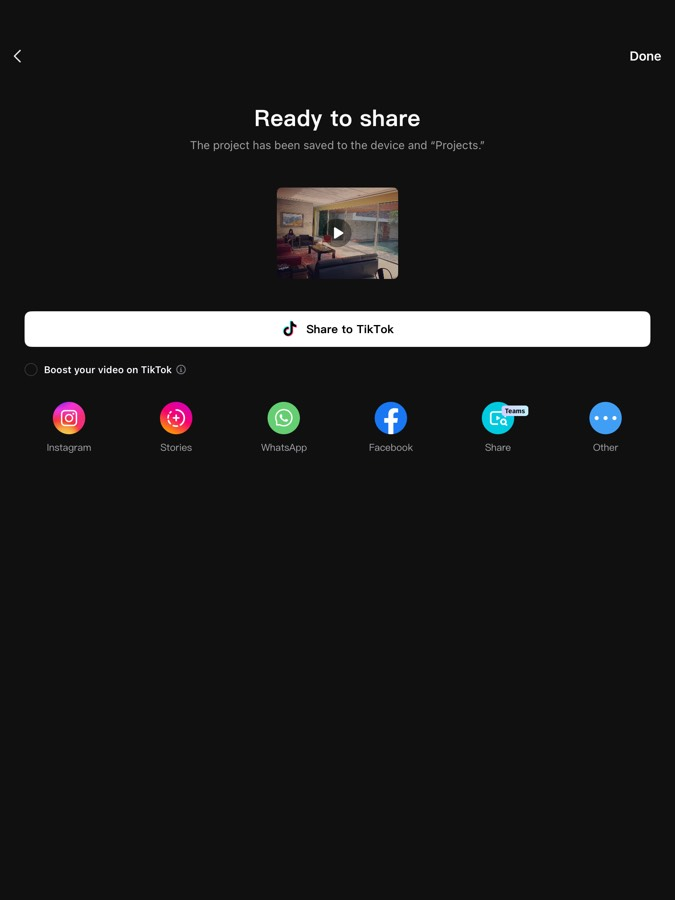

🏁 Welcome to the Media Lab
Today you'll learn how AI creates the media you see every day — and you'll use it to make your own. By the end you will have:
- 🖼️ An AI-generated ad campaign you designed with prompts
- 🎬 A travel video with an AI voiceover, made in CapCut
- 🧠 The skills to tell what's real, what's AI, and how the algorithm sees you
How today works
- Move through the stations at your own pace using the buttons at the top.
- When you see a ⏸ CHECKPOINT card, stop — we do that part together on the big screen.
- Tap Mark station complete when you finish each station.
- Stuck? Ask a neighbor first, then raise your hand.
🕵️ Spot the AI
AI can now make videos of real people saying things they never said. These are called deepfakes.
CHECKPOINT — Eyes up front
We're watching the deepfake videos together on the big screen. Don't play videos on your iPad. When the videos end, come back here.
Your turn: could you tell?
Tap the answer you think is right.
Talk about it (with your table)
- What gave the fakes away — or didn't?
- If video can be faked, how should that change what you trust online?
🧠 AI, Decoded
So what actually is AI?
Not hardware. Not just any computer code. The key word is learn — nobody writes rules like "a cat has pointy ears." The AI figures that out itself by studying millions of examples.
How does it learn?
- 📥 Data in — millions of photos, sentences, songs, videos
- 🔍 Find patterns — what usually follows what? what goes together?
- 📤 Predict & create — use the patterns to guess the next word, draw a new image, write a script
🔮 Try it: be the AI
Predictive text is AI in your pocket. This mini-AI learned patterns from example sentences. Tap the word you think comes next — you're doing exactly what AI does.
Notice: the AI never "understands" — it just knows which words usually follow other words, from patterns in its data. ChatGPT works the same way, with trillions of examples.
Check yourself
✨ Prompt Lab: Build a Campaign
You talk to generative AI with prompts.
Better prompt → better result. Vague in, vague out.
Weak vs. strong prompts
The AI has to guess everything: style, color, setting, mood.
Subject + details + style + setting. Now the AI knows exactly what patterns to draw on.
Your mission: an ad campaign for an eco-friendly product
Invent a product. Something eco-friendly that should exist: solar backpack? Reef-safe surf wax? Compostable phone case?
Write your slogan + 2–3 bullet points in the Notes app. What makes it cool? Who is it for?
Craft your image prompt using the formula: subject + details + style + setting.
Generate your ad image in AI Image Studio. Try at least 3 different prompts — refine each time.
Save your best image: long-press the image → Save to Photos.

Feedback swap: show your campaign (image + slogan) to two neighbors. Tell them one thing that grabs you and one thing to improve. Be kind and specific.
Check yourself
📡 The Algorithm Knows You
Why does your TikTok feed feel like it reads your mind? Because an AI curates it.
🎮 You are the algorithm
Meet Kai, 15, from Honolulu. Kai's data: watches surf videos to the end, likes food posts, skips dance clips in 2 seconds, follows 3 gaming creators.
Pick the 3 posts you'd put at the top of Kai's feed:
That choosing you just did? That's curation — and AI does it billions of times a day, using engagement data instead of gut feeling.
Two kinds of AI
Analytical AI interprets and categorizes existing data — predicting, sorting, recommending.
Your feed uses analytical AI (studying your behavior). AI Image Studio is generative (making something new).
🗂 Sort it: generative or analytical?
Talk about it (with your table)
- Ads seem to "know" what you want. Convenient — or creepy? Where's the line?
- If the algorithm only shows you what you already like, what do you never see?
🎬 Video Studio
The big one: make a travel video with an AI voiceover in CapCut. You're combining everything — generative AI (the voice), curation (picking your best shots), and editing craft.
Part 1 — Get your photos & script
Pick a country (or a Hawaiian island). Download 10 photos of it from Unsplash — free, no login.
Long-press each photo → Save to Photos.Write your script in Notes — 1–2 short sentences per photo. Use this shape:
This is Mount Fuji, Japan's tallest mountain.
In Tokyo, over 37 million people ride the world's busiest trains.
...(one short paragraph per photo, blank line between each)
Part 2 — Build it in CapCut
Open CapCut → New project → select your 10 country photos → Add.

Drag photos to reorder them to match your script, then tap Text → Text to audio.
Paste your script (with the blank lines). Choose an AI voice without a purple gem (those are premium). Tap Split text automatically → Split.

Line up timing: drag each photo's right edge to match the end of its caption, so each picture stays on screen while its line is spoken.

Style your captions: tap the text on screen → pick a style → tap the checkmark → Regenerate to apply to all captions.

Add music: tap Audio → Sounds → pick a song → tap +.

Trim the music: scroll to the end of your photos → select the music track → Split → delete the leftover piece.

Fade out: select the music track → Fade → Fade out → 3 seconds. Then tap Export.

Save it: tap Other → Save to Video. Done! 🎉

🚀 Finished early?
- Try CapCut's AI Lab: type "Travel video highlighting [your country]" and compare its auto-video to yours. Which is better? Why?
- Generate a movie-poster image for your video in AI Image Studio.
- Add auto-captions to a different video clip.
🏆 Premiere & Level Up
CHECKPOINT — Premiere time
We'll watch volunteer videos together on the big screen. While watching, notice: what choices did each creator make? What did the AI do vs. what did the human do?
Your AI toolbox going forward
Free tools you can keep using after today:
CapCut
Video editing + AI voiceover, captions, effects. What you used today.
AI Image Studio
Prompt-based image generation, no login. Bookmark it.
Canva
The design tool used in almost every school & job — AI image gen, video, presentations (needs an account).
iMovie
Apple's free editor on your iPad — includes free stock music. No AI, but great for polish.
ChatGPT / Claude / Gemini
AI writing partners — brainstorm scripts, slogans, study help.
Unsplash
Free professional photos for any project, no login.
🎯 Final check: prove you've got it
These are practice versions of your post-test questions. Get them right here and the real test is easy.
📝 The real post-test
When your instructor says go, complete the official post-test:
(Link provided by your instructor)